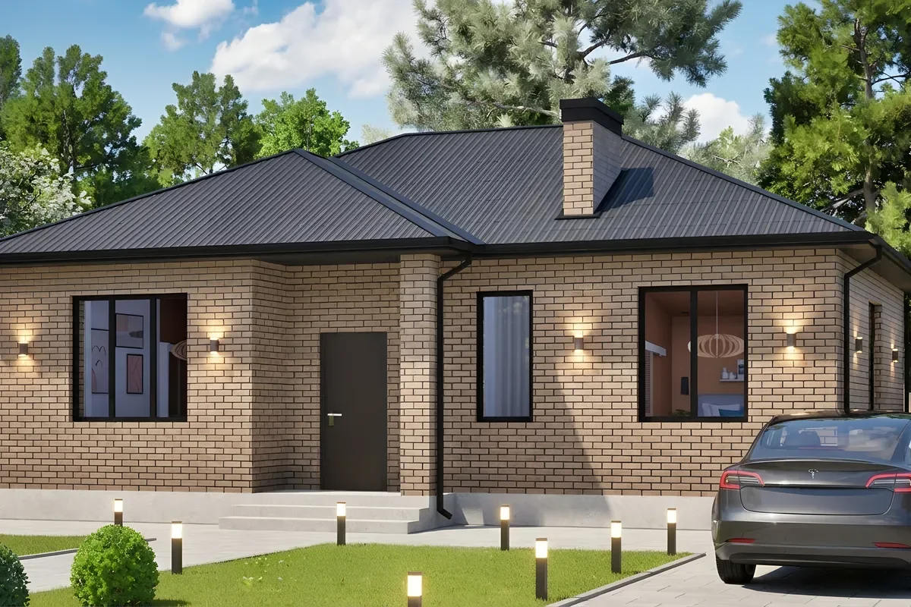
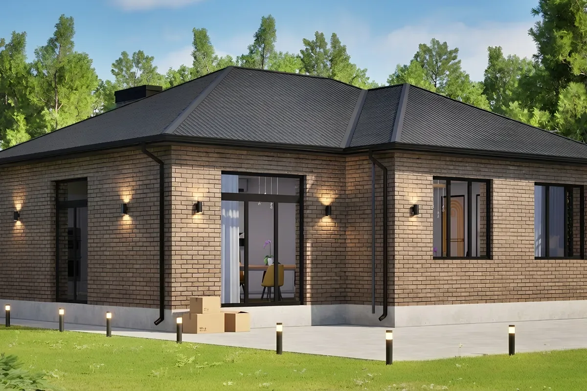
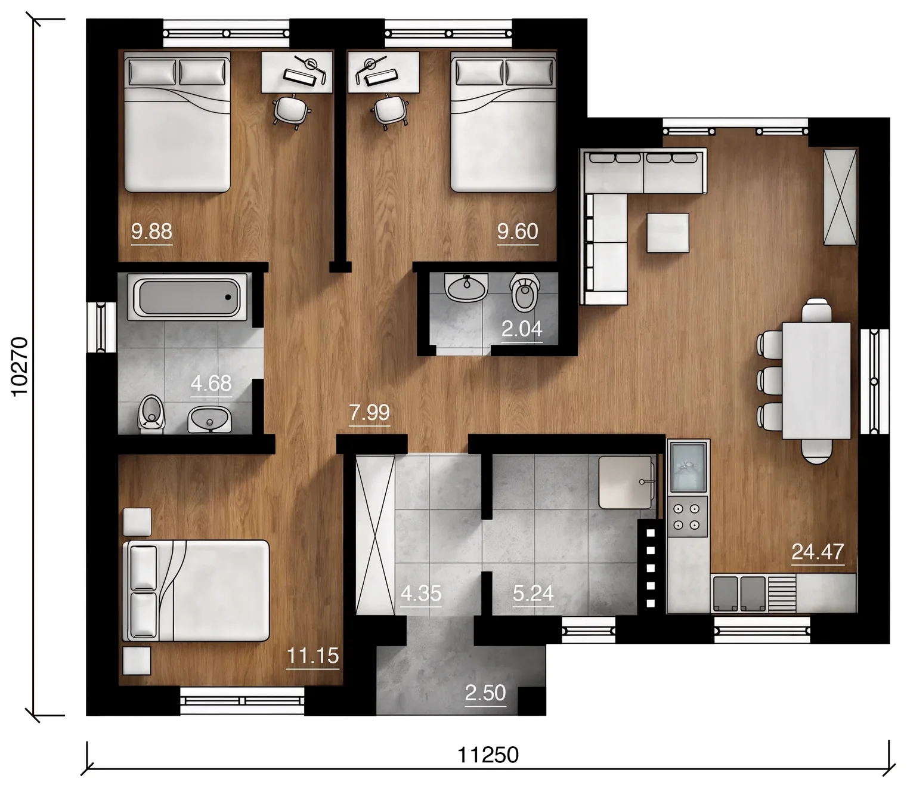
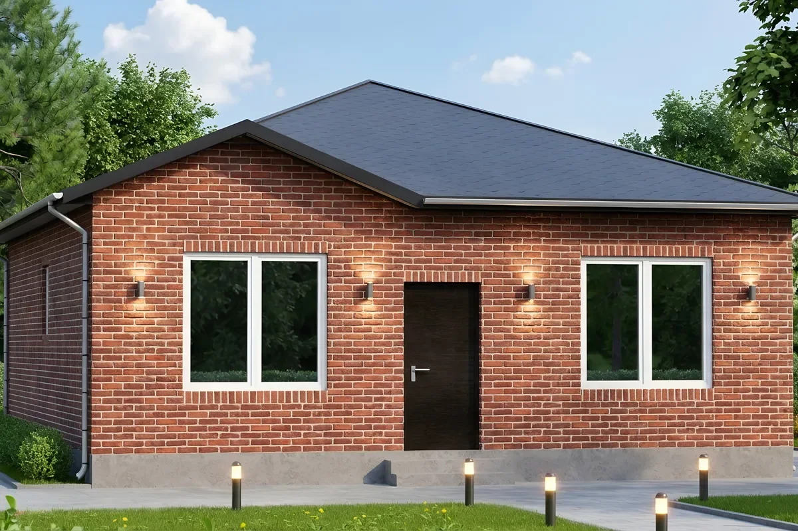
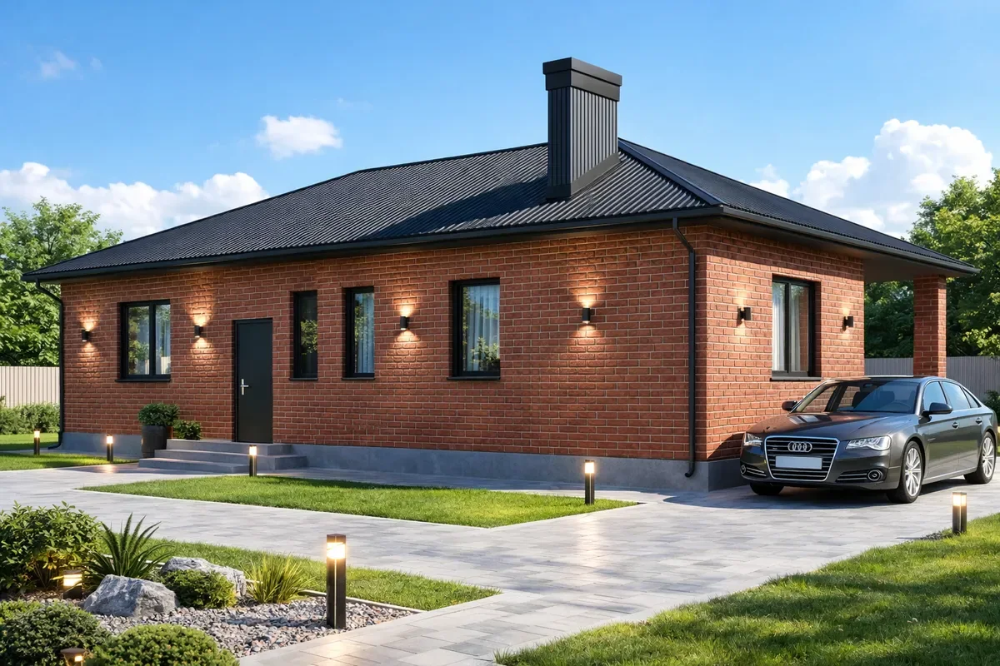
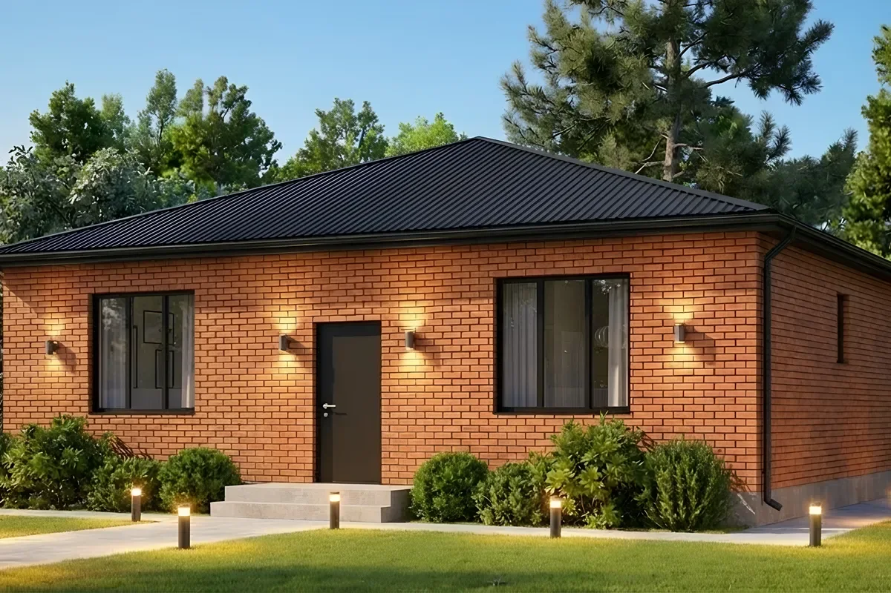

Дом для повседневной жизни
В центре повседневной жизни — кухня-гостиная 24,47 м². Котельная 5,24 м² отделяет бытовые и инженерные задачи от жилых комнат.

Отдельный вариант проекта 85 м² с тремя спальнями 9,88, 9,6 и 11,15 м². Два санузла и котельная формируют функциональную техническую зону, не занимая общую кухню-гостиную.
Окончательная стоимость определяется после проверки участка, комплектации и актуальной сметы. Не является публичной офертой.
Изображения извлечены из материалов строительной компании; рендер не является фотографией построенного объекта.

В центре повседневной жизни — кухня-гостиная 24,47 м². Котельная 5,24 м² отделяет бытовые и инженерные задачи от жилых комнат.

В центре повседневной жизни — кухня-гостиная 24,47 м². Котельная 5,24 м² отделяет бытовые и инженерные задачи от жилых комнат.
Практичный вариант для семьи из трёх–пяти человек, которой нужны две детские или отдельный кабинет.
Компания указывает работу с 2014 года и более 200 построенных домов. В материалах подтверждены строительство в радиусе около 250 км от Ростова-на-Дону, типовые и индивидуальные проекты, срок 6–9 месяцев и гарантия 5 лет на выполненные работы.
Ростовская область и север Краснодарского края — окончательная возможность строительства зависит от адреса участка.
Все проекты компанииКомплектация «Старт», таблица от май 2026. Запросите актуальный расчёт.
Дата и версия цены указаны явно; скрытые или непроверенные цены в структурированные данные не добавлены.
Сравним подходящие планировки и комплектации. Заявка поступит специалисту «Домиан Квартал», а не напрямую строительной компании.

ДоманСтрой
85 м² · 1 этаж · 3 спальни · 1 санузел
Газобетон / кирпич

ДоманСтрой
80 м² · 1 этаж · 3 спальни · 2 санузла
Газобетон / кирпич

ДоманСтрой
115 м² · 1 этаж · 3 спальни · 2 санузла
Газобетон / кирпич